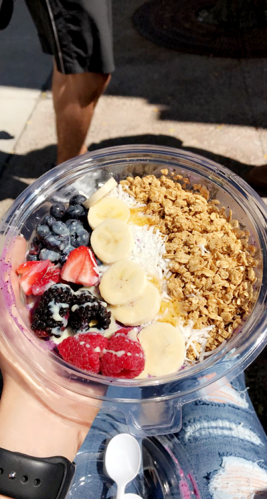
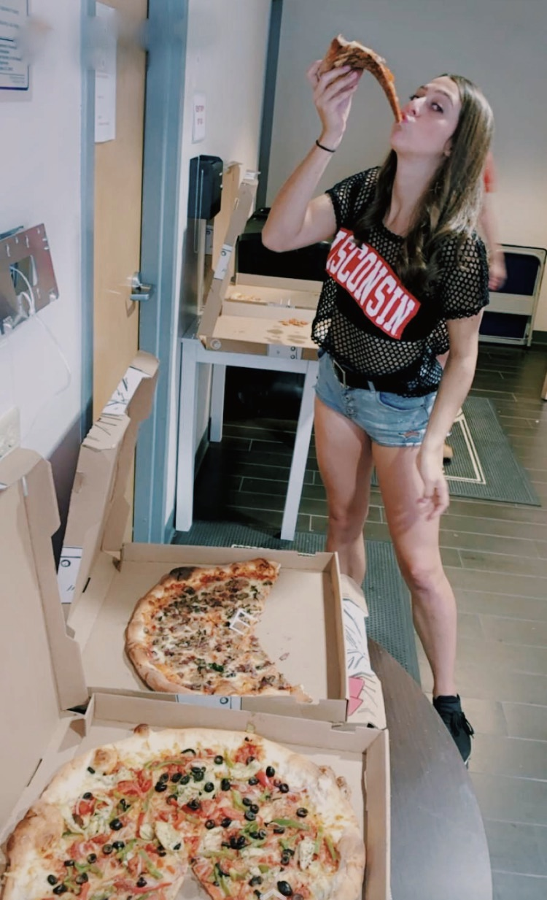
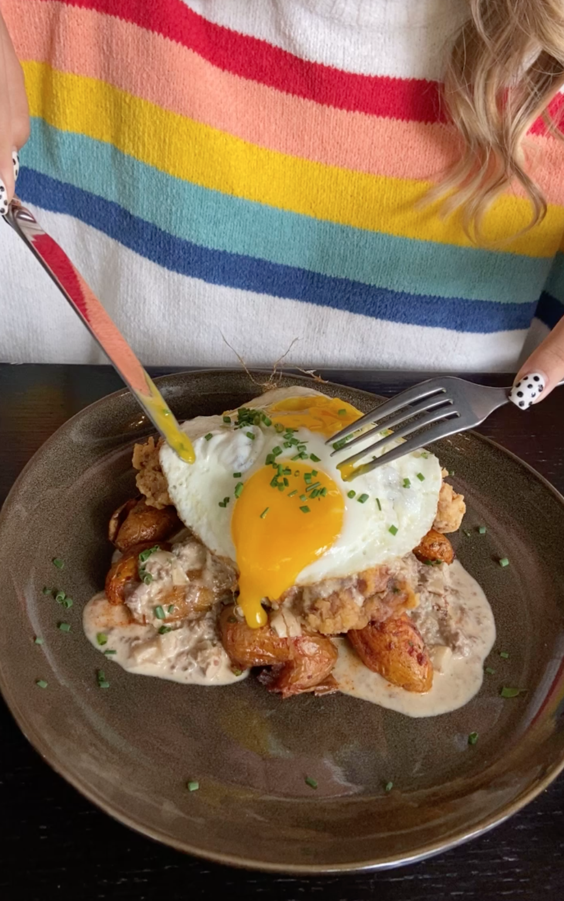
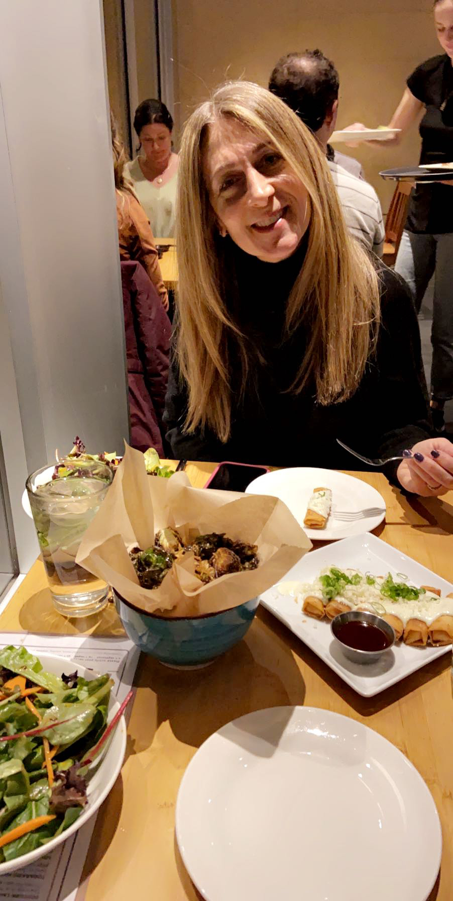
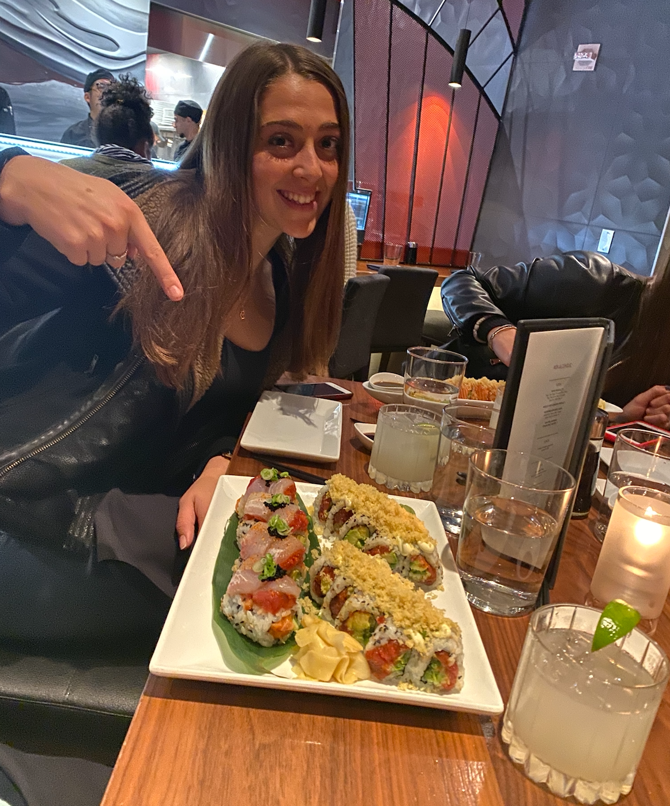
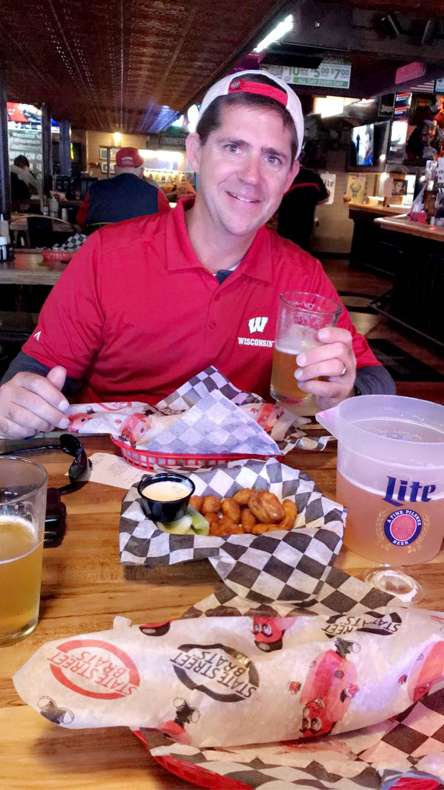
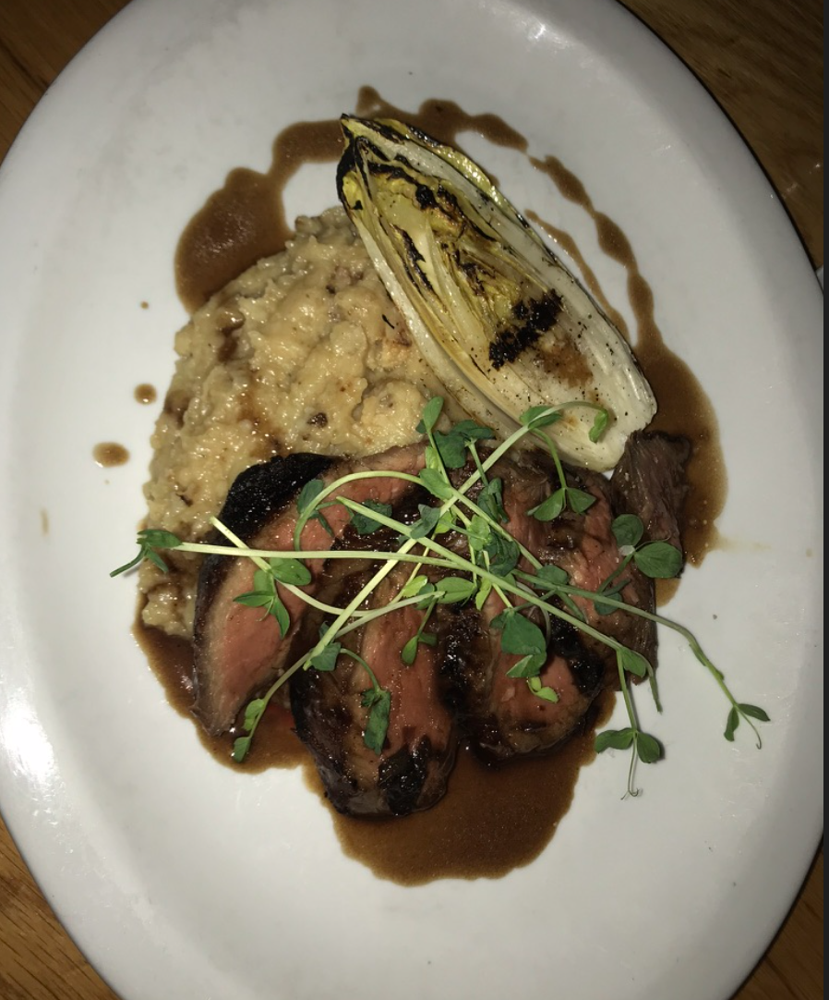
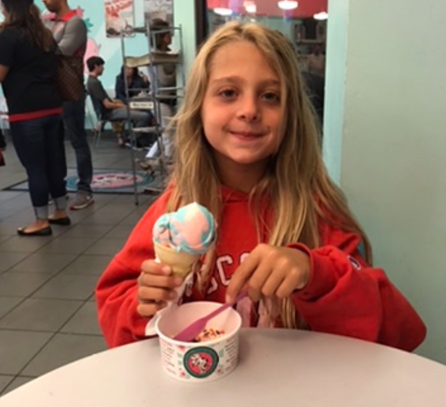

If you know me, you know I LOVE food and enjoy exploring new places to eat around campus and downtown. UW has some of the best food around. Let me share with you some of my favorites!
This is a delicious açaí bowl from Grace Coffee on State Street. They have great coffee, tea, and breakfast options!
Ian's Pizza is the best on game days (and is simply a Madison classic)! My go-to order is the Mac-and-cheese pizza! I know it sounds pretty weird, but trust me on this one - it is like no other.
Merchant has breakfast/brunch and dinner menus, but brunch is my favorite for sure!The meal pictured above is called the "Country Fried Steak," a 6oz sirloin steak with two sunny up eggs and smoked duck heart gravy over smashed red potatoes. Yum!
My mom and I got the best array of food at Tavernakaya when she visited for Mom's weekend. Brussel sprouts, salads, veggie spring rolls, sushi, and more...
You can find the best sushi in Madison at Red Sushi! They have the coolest specialty rolls and offer a really nice and modern atmosphere. My friends and I love to go here for special occasions (it can be a little pricey). I recommend the crunchy salmon roll (pictured above), rainbow roll, and the mermaid roll. I definitely recommend looking at their drink menu too (if you are 21 or going with your parents). My dad and I tried the lychee martini, and it was so good!
Brats is one of my favorite bars in Madison. It has such a fun atmosphere with the best University of Wisconsin sports energy there is. I love going for game days or even just to hang out with some friends to eat some cheese curds and watch sports. My dad and I enjoyed the best brats, cheese curds, and beer at Brats when he visited for Dad's weekend. This is a great place to bring visitors!
Okay... this is easily one of my favorite foods in Madison, but unfortunately, it isn't available year round. Right across from Memorial Library on State Street are a bunch of different food trucks. My favorite is called "Fresh Cool Drinks," but there are also empanada, Peruvian food, smoothie, and taco trucks as well. I order a chicken and avocado spring roll with medium spicy sauce from "Fresh Cool Drinks," and it is really big and so good! I highly recommend grabbing one of these before the trucks leave for the winter (and if you're balling on a college budget, they're only $4)!
When I visited UW for the first time as a senior in high school, my mom and I went to Graze. The food is unbelievable and the view of the Capital can't be beat. The image above is steak and mashed potatoes. We also ordered an awesome flat bread and finished off the night with the best (I am not even exaggerating) apple pie I have ever had!
And of course I cannot forget about Wisconsin ice cream. The Ice Cream Shop on State Street has so many great ice cream, flavor options and is one of my favorite places to go. They also have chocolate covered bananas that are so good too. The first thing I did when my family visited for the first time was to bring my little sister here.
Dining Halls...
So I know I have to include the dining halls on campus too, but I actually lived off campus as a freshman and didn't get the chance to eat at them often... HOWEVER, from the few times I have gone and from what my friends who were on the meal plan have said, the stir fry, quesadillas, and omelets at Gordon's are the best! You can also use your Wisc card at different places around campus. Memorial Union has a few of my favorite on-campus restaurants. Der Rathskeller, Strada, and Carte are a few of my favorites.
 Okay... this is easily one of my favorite foods in Madison, but unfortunately, it isn't available year round. Right across from Memorial Library on State Street are a bunch of different food trucks. My favorite is called "Fresh Cool Drinks," but there are also empanada, Peruvian food, smoothie, and taco trucks as well. I order a chicken and avocado spring roll with medium spicy sauce from "Fresh Cool Drinks," and it is really big and so good! I highly recommend grabbing one of these before the trucks leave for the winter (and if you're balling on a college budget, they're only $4)!
Okay... this is easily one of my favorite foods in Madison, but unfortunately, it isn't available year round. Right across from Memorial Library on State Street are a bunch of different food trucks. My favorite is called "Fresh Cool Drinks," but there are also empanada, Peruvian food, smoothie, and taco trucks as well. I order a chicken and avocado spring roll with medium spicy sauce from "Fresh Cool Drinks," and it is really big and so good! I highly recommend grabbing one of these before the trucks leave for the winter (and if you're balling on a college budget, they're only $4)!